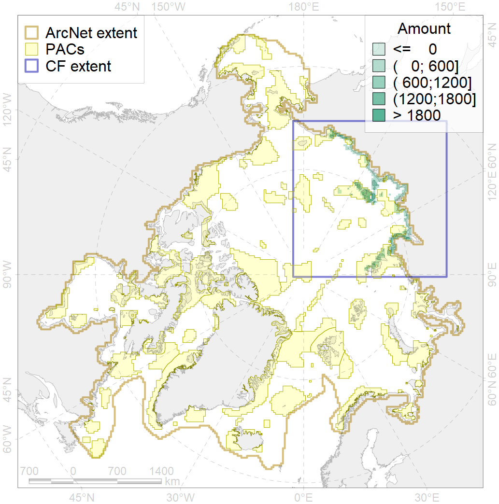
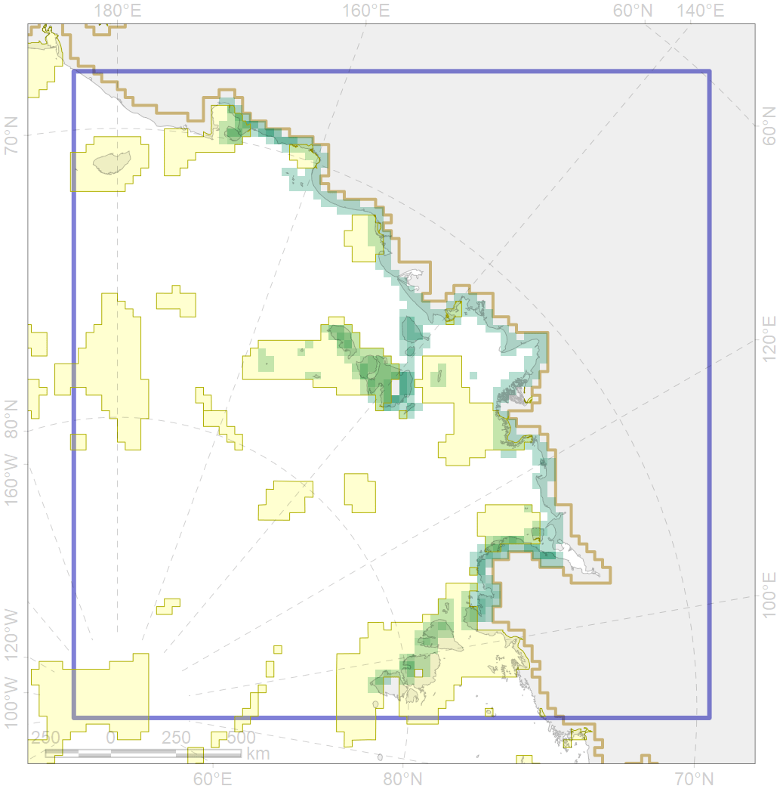

9030

| CF code | 9030 |
| CF name | polar bear denning areas of LV (Laptev Sea) subpopulation |
| Time Period | prior to 2015 |
| Source(s) | Report for project “Creating Atlas of Polar bear in Russian Arctic” |
| Seasonality | Oct-Apr |
| Depth Horizon | 0 |
| Methodology | Field data, expert opinion. |
| Use Restrictions | Could be used for the project |
| Author Name | Evgeniya Melikhova, Stanislav Belikov |
| Notes | |
| Scenario’s Target | 0.528 |
| Target Achievement | 0.530 (Scenario: 100.4%) |
| PAC | Share of the Total Amount within the PAC | Share of the Target Achievement for the ArcNet | PAC’s Contribution to the Target Achievement |
|---|---|---|---|
| 8 | 6.9%7.2% | 11.1%11.4% | 11.0%11.3% |
| 9 | 0.6%0.8% | 0.7%0.8% | 0.7%0.8% |
| 10 | 0.4%0.5% | 0.7%0.9% | 0.7%0.9% |
| 11 | 24.4%24.4% | 44.6%44.6% | 44.4%44.5% |
| 12 | 1.9%2.2% | 3.2%3.7% | 3.1%3.7% |
| 13 | 6.3%6.3% | 11.3%11.3% | 11.2%11.2% |
| 14 | 12.8%12.8% | 21.2%21.2% | 21.2%21.2% |
| inner | 53.2%54.3% | 92.7%93.9% | 92.4%93.6% |
| outer | 46.8%63.4% | 7.7%34.1% | 7.6%34.0% |
| † supplement values are for area consistence whereas principal values are for Accenter compatible gridded stats |